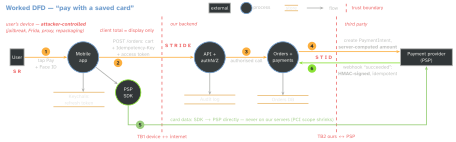

security · folio
In one line: Threat modelling is answering four questions while designing: What are we working on? (draw the data flow) · What can go wrong? (STRIDE at every trust boundary) · What are we going to do about it? (mitigate, eliminate, transfer, accept) · Did we do a good enough job? (tests, review). On mobile the first boundary is the device itself: the client is in the attacker’s hands, so the server enforces.
Download PDF Print view LaTeX source


The process
- Scope + DFD: one feature, level-0/1 data-flow diagram: external entities, processes, data stores, flows. Include the unglamorous paths: push, deep links, WebViews, analytics SDKs, logs, backups, support tools.
- Assets + classification: secrets (tokens, keys), regulated (card data, health), personal (PII, location), internal, public. The class sets the controls.
- Trust boundaries: wherever data changes privilege — device ↔ network, app ↔ other apps (URL schemes, pasteboard, extensions), WebView ↔ native, backend ↔ third party.
- Enumerate threats: STRIDE per element, hardest at boundary crossings; attack trees for the crown jewels; abuse cases (“a user who …”).
- Rate + respond: likelihood × impact → mitigate, eliminate (drop the data or feature), transfer (PSP, insurer), accept (written down, owner signs).
- Validate: each mitigation gets a test or review item; the model lives in the repo and is revisited when the design changes.
STRIDE — six threats, six properties
| threat | violates | mobile example | mitigation |
|---|---|---|---|
| Spoofing | authentication | stolen token, fake server, other user | OAuth + PKCE, short tokens, TLS, App Attest |
| Tampering | integrity | edited price, patched app | server-side rules, signed data, AEAD |
| Repudiation | non-repudiation | “I never paid” | server audit log, signed receipts |
| Info disclosure | confidentiality | PAN in logs, snapshot, IDOR | tokenize, redact, object-level authZ |
| Denial of service | availability | retry storms, card testing, SMS pumping | rate limits, backoff, quotas |
| Elevation of privilege | authorization | isAdmin in the client, hidden debug menu | authZ on every request |
STRIDE per element (Shostack)
| S | T | R | I | D | E | |
|---|---|---|---|---|---|---|
| external entity | ✓ | ✓ | ||||
| process | ✓ | ✓ | ✓ | ✓ | ✓ | ✓ |
| data store | ✓ | (logs) | ✓ | ✓ | ||
| data flow | ✓ | ✓ | ✓ |
Cuts the checklist: ask only the questions that apply to each shape.
Rating risk — and the DREAD debate
DREAD (Damage, Reproducibility, Exploitability, Affected users, Discoverability) scores each 1–10; Microsoft dropped it — “different people selected very different numbers” (Shostack, 2008). Prefer likelihood × impact on a 3-level scale (OWASP Risk Rating), CVSS for concrete vulnerabilities, and a ranked top-N. Related methods: PASTA (risk-centric), LINDDUN (privacy threats), attack trees.
Enforce on the server
The device owner controls the binary, memory, storage and network (own CA → pinning bypassed). So anything the client decides is a suggestion: price, discount, role, entitlement, “OTP already verified”, rate limit, feature flag for paid features. Client checks are UX; attestation (App Attest / Play Integrity) raises the cost, it does not create trust. Check object ownership on every ID (GET /orders/123 of another user = BOLA, OWASP API1).
Example — one row of the threat register
- id: T3
element: flow 2 (app -> API, crosses TB1)
stride: Tampering
threat: user edits price/total in POST /orders (proxy, Frida)
risk: likelihood high x impact high => HIGH
mitigation: server prices the cart from its catalogue;
client total is display-only; Idempotency-Key
stops double charges on retry
verify: API test posts a tampered total, expects server price
status: mitigatedMore rows for this DFD: token theft from a backup (S) → Keychain ThisDeviceOnly + rotation; forged webhook (S/T) → verify HMAC + timestamp; replayed payment (T) → idempotency; PAN in logs/analytics (I) → PSP SDK + redaction.
Traps
- “It’s our app, so the client is trusted” — TB1 sits at the device.
- A one-off document at the end — it is a design activity, redone when the flow changes.
- Only the happy path: forgetting deep links, push payloads, backups, logs, SDKs, support tools.
- Everything rated “High” — no priority; DREAD decimals are false precision.
- Pinning or obfuscation as the mitigation — they slow an attacker, the server decides.